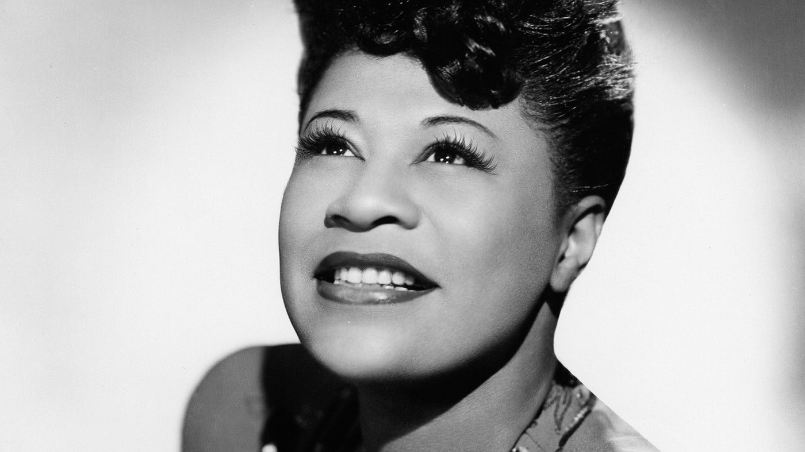

Ella Jane Fitzgerald
First lady of Song * Queen of Jazz * Lady Ella
Early Years
While Ella appeared in several movies and TV shows, her musical contributions with artists such as Duke Ellington and Louis Armstrong were some of the most notable acts outside of her solo career.
- April 25, 1917 - June 15, 1996
- From her humble beginnings in the East End section of Newport News, VA, Ella would grow to become a force to be reckoned with in the entertainment world. Orphaned at a young age, Ella found refuge and comfort listening to early records from Louis Armstrong, Bing Crosby, and especially the Boswell Sisters.
- At age 17, she had her first debut on stage at an amateur night. From there on she began performing with Webb's orchestra which was later renamed as Ella and Her Fmous orchestra after the passing away of the original orchestra leader, Chick Webb.
In 1993, after 60 years in the industry, she gave her last performance. Ella died at the age of 79 after years of declining health but remains celebrated in teh industry as one of its greatest vocalists and performers.
Photos